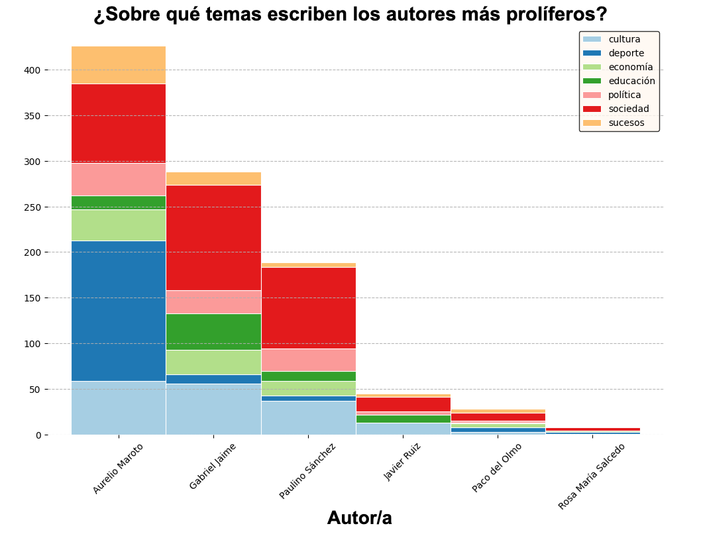

Corpus para La Solana
En esta entrada describimos los datos que se utilizarán para crear el asistente conversacional. Al final de nuestra investigación, determinaremos si todos los conjuntos de datos contribuyen a mejorar nuestro asistente o si podemos prescindir de algunos de ellos.
Descripción general del corpus para La Solana
En la tabla se encuentra el nombre del conjunto de datos, el tipo de archivo, el número de ejemplos o ediciones, el número de palabras de cada conjunto (si es posible calcularlo) y la fuente de donde se ha adquirido.
| Dataset | Tipo | Instancias | Palabras | Fuentes |
|---|---|---|---|---|
| Gaceta de La Solana | pdf con OCR | 203 ediciones | - | Ayto. La Solana, BVCL |
| Wikipedia | html/txt | 93 entradas | 111 500 | Lo que enlaza aquí |
| LaSolanaNews | tsv/excel | 1093 artículos | 366 000 | Ayto. La Solana, Kaggle |
| Blog Joaquín Costa. La Solana. Legado bustillo. | txt | 85 entradas | 92 251 | Blogspot |
| Libro El legado Bustillo de La Solana de García-Gallego | pdf con OCR | 65 páginas | 15 900 | -Biblioteca Digital Hispánica |
| Fundación Histórico-Cultural Paulino Sánchez Delgado | txt | 14 archivos | 3645 | -Sitio web de la fundación |
| Miscelánea | pdf con OCR, txt | 6 archivos, unas 60 páginas | - | Ayto. de La Solana (1-4), Página Web Turismo de Castilla la Mancha (5), Revista de la Asociación Amigos del Campo de Montiel (6) |
En las siguientes secciones se muestra una descripción pormenorizada de los diferentes conjuntos de datos.
Gaceta de La Solana
La Gaceta de La Solana es una publicación periódica bimensual financiada por el Ayuntamiento de La Solana y gestionada por Radio Horizonte. Está en circulación desde julio de 1980 y cubre temas de información e historia local de La Solana. A fecha en la que se escribe esta sección, existen 302 ediciones (la edición 282 y 283, publicadas durante la pandemia, se consolidaron en una sola), aunque solo disponemos de 204 digitalizadas con reconocimiento óptico de caracteres. En total, estas ediciones:
- suman 11 075 páginas, con un promedio de 55 páginas por edición.
- La más extensa cuenta con 124 páginas.
- La más breve tiene 32 páginas.
- Estas variaciones que suelen estar relacionadas con ediciones especiales, como las que anuncian las Fiestas de Santiago y Santa Ana, o con la antigüedad de las mismas, pues ediciones más antiguas tienden a tener menos páginas.
Portada de la Gaceta de La Solana edicición 51 en el año 1985.
Portada de la Gaceta de La Solana edicición 300 en el año 2023.
Maquetación de la Gaceta de La Solana en 1985.
Maquetación de la Gaceta de La Solana en 2023.
Publicidad en la Gaceta de La Solana en 1985.
Publicidad en la Gaceta de La Solana en 2023.
Wikipedia
"Páginas que enlazan con" (en inglés, "What links here") es una herramienta que Wikipedia pone a disposición de los usuarios. Permite extraer una lista de entradas que dirigen al artículo indicado por el usuario. Esto es útil por numerosas razones; por ejemplo, el número de enlaces que dirigen a una página muestra su popularidad e importancia. Además, ayuda a desambiguar entidades homónimas. En nuestro caso, estamos interesados en obtener contexto sobre La Solana y partimos de la base que las entradas que mencionan la villa pueden ser útiles para nuestro objetivo. Al pulsar en la flecha de abajo, se puede ver la lista de enlaces que llevan a la entrada de La Solana.Lista de entradas en Wikipedia que llevan a La Solana
- 214.ª Brigada Mixta (Ejército Popular de la República)
- Aceite Campo de Montiel
- Agrociudad
- Alfarería en la provincia de Ciudad Real
- Alhambra (Ciudad Real)
- Álvaro II de Bazán
- Álvaro de Bazán
- Amparo Pacheco
- Ancha es Castilla-La Mancha
- Ángel Romero de Ávila
- Antonio Serrano (atleta)
- Argamasilla de Alba
- Autovía del Guadiana
- Autovía del Sur
- Azafrán de La Mancha
- CM-3129
- Camino de Guadalupe de Levante
- Campillo de Aragón
- Campo de Montiel (Ciudad Real)
- Campo de Montiel (histórico)
- Carmen Velacoracho de Lara
- Casimiro García-Abadillo
- Castillo de Peñarroya (Ciudad Real)
- Cóbreces
- Dialecto navarro del euskera
- Dolores de Lara
- Eduardo Barreiros
- Eduardo Serrano Branat
- Elecciones municipales de 2015 en la provincia de Ciudad Real
- Federico Romero
- Felipe Benjumea Llorente
- Felipe I de Parma
- Fernando I de Parma
- Fernando del Rey Reguillo
- Fiestas de Interés Turístico de Castilla-La Mancha
- Fran López Castillo
- Fran Manzanara
- Gabriel García Maroto
- Herminia Parra
- Iglesia de Santa Catalina (La Solana)
- Inmaculado Corazón de María (Torreblanca)
- Isidro Antequera
- Iván Romero
- José Aureliano de la Guía
- Josefina Meneses
- La Mancha (Ciudad Real)
- La Ruta de Don Quijote, el itinerario ecoturístico
- La Solana
- La mujer en la alfarería
- Liga EBA 2022-23
- Liga EBA 2023-24
- Luis de Borbón y Farnesio
- Luis de Etruria
- Luis de la Cueva y Toledo
- Manzanares (Ciudad Real)
- Marquesado de Paradas
- Máximo Díaz-Cano
- Membrilla
- Miss Grand España 2018
- Montiel
- Moralzarzal
- Murla
- N-430
- Partido judicial de Manzanares
- Paula Sevilla
- Pedro Fernández de Castro el Castellano
- Pedro Reguillo
- Pilar de Vicente-Gella
- Pozo de la Serna
- Premio Searus de Poesía
- Primera Autonómica Preferente de Castilla-La Mancha 2010-11
- Primera Autonómica Preferente de Castilla-La Mancha 2011-12
- Primera Autonómica Preferente de Castilla-La Mancha 2012-13
- Primera Autonómica Preferente de Castilla-La Mancha 2013-14
- Primera Autonómica Preferente de Castilla-La Mancha 2014-15
- Provincia de Ciudad Real
- Quiteria
- Regimiento de Caballería «Lusitania» n.º 8
- Río Alhambra
- Río Azuer
- Ruta de don Quijote
- Ruy Pérez II de Villegas
- Santos Montoya
- Segunda División Femenina de España 2017-18
- Segunda División Femenina de España 2020-21
- Segunda División Femenina de España 2021-22
- Servicio Público de Empleo de Castilla-La Mancha
- TeleValdepeñas
- Tercera Federación - Grupo XVIII 2022-23
- Tercera Federación - Grupo XVIII 2023-24
- Tomás Barrera
- Trifón Medrano
- Valdepeñas (Ciudad Real)
La Solana Noticias
Este es uno de los dataset que podemos explorar en la sección Recopilación de datos. La recopilación contiene 1093 noticias sobre la localidad de La Solana y el archivo original está dividido en seis columnas: enlace, título del artículo, fecha de publicación, texto del artículo, autor y tema. El tema (política, deporte, economía, cultura, sociedad, sucesos, educación) se ha añadido manualmente por la autora de este sitio web siguiendo estas directrices:
- política: medidas o discrepancias políticas y regulaciones.
- El PP critica a los socialistas “porque no están a la altura de la sociedad solanera”
- deporte: todo tipo de deportes, incluidos los fichajes.
- El CF La Solana abusa de un flojo Casasimarro (6-0) y escala hasta el quinto puesto en la tabla
- economía: agricultura, gastronomía, comercio local, emprendimiento local y desempleo.
- Los agricultores, de uñas con los primeros precios en tablilla: “Hay parcelas que tendrían pérdidas”
- cultura: arte, espectáculos, actuaciones, poesía, música o literatura.
- Más de 10.000 personas pasaron por el 'Oasis Sound' en su segunda edición
- sociedad: un término más amplio que abarca todos los temas relacionados con la sociedad, incluyendo religión, compromiso social, festividades, eventos taurinos, bienestar o salud. Las noticias sobre el coronavirus también se incluyeron en esta sección.
- Eugenio Velasco: “Los jóvenes fuman más y los adultos menos”
- Las fiestas del Cristo del Amor terminan con récord de recaudación tras venderse todos los dulces
- La Hermandad de Santiago presenta los actos del patrón
- sucesos: condiciones meteorológicas, actualizaciones de tráfico, incidentes y otros eventos notables donde las fuerzas del orden y otras autoridades suelen estar involucradas.
- La Policía Local atiende cinco requerimientos en Nochebuena y otros sucesos durante el fin de semana
- Crónica de una tarde de súbito viento huracanado
- educación: escuelas e institutos del municipio. También noticias sobre medidas educativas para combatir el desempleo.
- El IES Clara Campoamor hace públicos los datos finales de 2º de Bachillerato
Como veíamos en la sección Recopilación de datos, este conjunto de datos sí está estructurado. ¿Qué información podemos extraer de este corpus que no podamos extraer de las gacetas?
En el eje horizontal se representan los años en los que se han publicado artículos. El año con mayor número de publicaciones es 2011, mientras que 2020 tiene el menor, posiblemente debido a la pandemia de coronavirus. Cabe destacar que los datos de 2024 aún no están completos. Los temas más frecuentes son sociedad, sucesos y deportes.
El eje horizontal representa el número de artículos escritos por cada autor desde el comienzo de las publicaciones. Los tres autores más productivos han escrito alrededor del 90% de todos los artículos. Cabe destacar que no todas los artículos están atribuidos a un autor en la fuente original.

La gráfica muestra cierto balance entre los autores y temas de acuerdo con su número de publicaciones. Observamos que el autor más prolífero es el que más artículos escribe sobre deporte.
Blog Joaquín Costa. La Solana. Legado Bustillo.
El blog "Joaquín Costa. La Solana. Legado Bustillo" de Julián Simón contiene 85 artículos sobre el legado histórico de La Solana. La longitud de los artículos varía considerablemente: el más corto tiene apenas 30 palabras, mientras que el más largo consta de casi 8500 palabras.
Títulos de las entradas en el blog de Julián Simón
- 1 CH.- LAS CHOZAS DE LA SOLANA
- 1.882. MOLINO DE VIENTO
- 1.884. ROGATIVAS. SEQUÍA. LANGOSTA.
- 2 CH.- CONSTRUCCIÓN DE LAS CHOZAS
- 3 CH.- INTERIOR DE LAS CHOZAS
- A LA MEMORIA DE DON ANTONIO MACHADO
- ACOMODO DE PASTOS EN LA SOLANA
- ALFOMBRAS. DÍA DEL CORPUS. CALLE CONVENTO
- AYUNTAMIENTOS DEMOCRÁTICOS PRIMERAS ELECCIONES 3 DE ABRIL DE 1.979
- CALLES DEDICADAS A MUJERES
- CAPILLAS DE LA PARROQUIA DE SANTA CATALINA
- CARTA DEL OBISPO DE C. REAL AL DIARIO DE ZARAGOZA
- CASO DE RUPTURA DE LA NOVIEZ O FALLECIMIENTO DE UNO DE LOS NOVIOS. (3)
- COLEGIO DE Ntra, Sra. DE PEÑARROYA (DEL AVE MARÍA)
- COLEGIO DE SAN LUIS GONZAGA
- COLEGIO ROMERO PEÑA. LA SOLANA
- COMPOSTURA DE LA TORRE AÑO 1.881
- CONVENTO DE TRINITARIOS
- COOPERATIVA LA UNIÓN. FÁBRICA DE HARINAS Y PANADERÍA
- COSTA ABOGADO DEFENSOR
- D. JOAQUÍN COSTA: LA NOVIEZ EN LA SOLANA EN 1.897
- DEMANDA PRESENTADA POR COSTA EN LA SOLANA
- DON JOAQUÍN COSTA. BREVE BIOGRAFÍA
- DON MANUEL CIGES APARICIO AUTOR DE LA BIOGRAFÍA : "COSTA EL GRAN FRACASADO"
- EL AGUA POTABLE EN LA SOLANA. COMISIÓN ADMINISTRADORA DE LOS BIENES DEL LEGADO
- EL ASILO
- EL CALVARIO
- EL CEMENTERIO NUEVO
- EL CEMENTERIO VIEJO
- EL CÓLERA DE 1.834
- EL CUADERNO MANUSCRITO DE LA SOLANA
- EL DESPOSORIO
- EL ESPARTO. LA PLEITA. LOS PLEITISTAS.
- EL LEGADO BUSTILLO
- EL LIBERAL INFORMA DEL ACTO (12-07-1904)
- EL PAÍS INFORMA (I) ACTO DEL 10 JULIO DE 1904 EN LA PLAZA MAYOR.
- EL PAÍS INFORMA (II). EL MITIN
- EL RELOJ DE LA VILLA (1.874)
- EL YESO DE LA SOLANA
- EMIGRANTES SOLANEROS
- EPÍLOGO. EL AYUNTAMIENTO ADMINISTRADOR. PATRONATO
- ERMITA DE NUESTRA SEÑORA DE LA CONCEPCIÓN O LOS ALAMILLOS (El cristo del Amor)
- ERMITA DE SAN ANTONIO ABAD
- ERMITA DE SAN MIGUEL
- ERMITA DE SAN SEBASTIÁN
- ERMITA DE SANTA ANA
- ERMITA DE SANTA QUITERIA Y SAN ISIDRO
- ESTUDIANTES BACHILLERATO 1.960
- FAROLAS 1.899
- FUNDACIÓN DE LA SOLANA
- HONORARIOS PERCIBIDOS POR COSTA
- HOSPITAL CALLE SAGRARIO
- IGLESIA PARROQUIAL DE SANTA CATALINA
- LA CAL VIVA
- LA CALLE COMISARIO
- LA GUERRA DE SUCESIÓN
- LA HARINERA
- LA SOLANA EN LAS RELACIONES DEL REY FELIPE II
- LA SOLANA Y EL AGUA. APUNTES HISTÓRICOS
- LA SOLANA Y EL AZAFRÁN
- LA SOLANA Y EL CATASTRO DEL MARQUÉS DE LA ENSENADA
- LA SOLANA Y LA CONSTITUCIÓN DE 1812"
- LA VIRGEN DE PEÑARROYA
- LAS ERAS DE EMPARVAR
- LAS ESCUELAS NACIONALES DEL CONVENTO DE LOS AÑOS CINCUENTA
- LAS FLORES DE NUESTROS CAMPOS
- LOS BAÑOS DE FRASCO: REFRESCADERO DE SAN ISIDRO
- LOS CINCO VOTOS QUE HABÍA EN LA SOLANA
- LOS HONORARIOS DEl SR. COSTA
- LOS MANIFIESTOS POSTERIORES
- LOS MOLINOS DE LA SOLANA
- LOS SACERDOTES FIDUCIARIOS
- LUZ ELÉCTRICA
- MEMORIA LEÍDA POR COSTA EN LA PLAZA MAYOR
- MONASTERIO DE LAS MONJAS DOMINICAS
- MUERTE DE DON JOAQUÍN COSTA
- PLAZA MAYOR DE LA SOLANA
- POR SANTA TERESA ROSA EN MESA
- PSOE Y UGT
- RÍO AZUER. SUS FUENTES
- TELÉGRAFO Y CARRETERA
- TESTAMENTOS DE BUSTILLO
- TRABAJAR EN EL CAMPO.EN LOS AÑOS CINCUENTA Y SESENTA
- VENTA AL OBISPADO DE LA MITAD DE LAS FINCAS
- ZARAGOZA 1.906. ACONTECIMIENTOS CLARIFICADORES
Libro El Legado Bustillo de La Solana
El libro sobre el Legado Bustillo data de 1935 y fue escrito por José María García Gallego, un médico que escribió sobre un polémico pleito ocurrido en La Solana a principios del siglo pasado. La disputa legal llevó a la localidad al aclamado político y abogado Joaquín Costa. No hemos podido encontrar más información sobre el autor. En cuanto al libro, contiene 65 páginas y está dividido en 18 capítulos con un total de 15 900 palabras.
Fundación Histórico-Cultural Paulino Sánchez Delgado
La Fundación Histórico Cultural Paulino Sánchez Delgado, constituida oficialmente en 2002, tiene como objetivo principal promover la cultura y la investigación en La Solana y su entorno. Sus actividades también incluyen la edición de publicaciones, la concesión de becas y premios, y la organización de cursos, conferencias, y exposiciones. Además, la Fundación se dedica a la preservación y catalogación de archivos y colecciones, principalmente relacionados con La Solana y otras localidades de Castilla-La Mancha.
En la página web de esta fundación encontramos varias pestañas con la descripción del sitio, la historia y las publicaciones fruto de esta fundación. Para nuestro fin, hemos extraído automáticamente el texto de la pestaña de inicio y las pestañas sobre las diferentes publicaciones. En total, hemos obtenido 14 archivos de texto plano con un total de 3645 palabras.
Publicaciones cuya descripción ha sido extraída automáticamente
- Arte en La Solana
- El Franquismo en La Solana II. 1947-1959 Tiempo de silencio
- El agua en La Solana I. De los orígenes a 1963
- El agua en La Solana II. 1963-2011-
- Estampas de La Solana
- Evolución y futuro de las comarcas de Ciudad Real
- La Iglesia de Santa Catalina de La Solana (Siglos XII-XV). Orígenes de la Villa
- La Inquisición en La Solana y otras villas del Campo de Montiel
- La Solana y Santiago Apóstol. Del origen de la Villa al Patronazgo de la Feria
- La Solana y las hoces. La Barcelona de La Mancha
- Partidos políticos en La Solana en periodos democráticos I. De la Restauración de 1874 a la II República de 1931
- Población y poblamiento de La Solana durante el siglo XX
- Tiempo de favores (El motín de las mujeres)
Miscelánea
Contamos con una serie de artículos procedentes de diversas fuentes que pueden sernos útiles para alcanzar nuestro objetivo. Se trata de:
- Conocimientos sobre el mundo del vino:: archivo de once páginas procedente de la página del Ayuntamiento de La Solana sobre tipos de uva y vinos.
- Fiestas y tradiciones : pestaña procedente de la página web del Ayuntamiento de La Solana sobre las fiestas y tradiciones de la localidad.
- Guía turística 2012 : documento digitalizado de 28 páginas con los principales lugares de interés en La Solana. Publicada en la página web del Ayuntamiento de La Solana.
- Ruta del vino de La Mancha : documento de 19 páginas publicado en la página web del Ayuntamiento de La Solana sobre los pueblos de la región que pertenecen a la ruta. Contiene una descripción de cada localidad y lugares o actividades de interés.
- La Solana: Santiago Apóstol, patronazgo y hermandad : artículo de dos páginas procedente de la Revista de la Asociación de Amigos del Campo de Montiel sobre La Solana y su relación con Santiago Apóstol.
- Extracto del libro 101 VIAJES POR CASTILLA-LA MANCHA : documento de una página sobre La Solana publicado por Turismo Castilla-La Mancha.